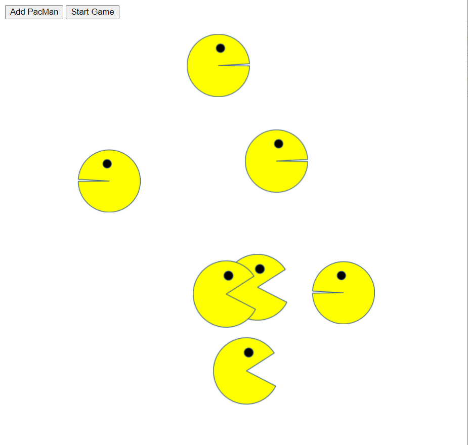
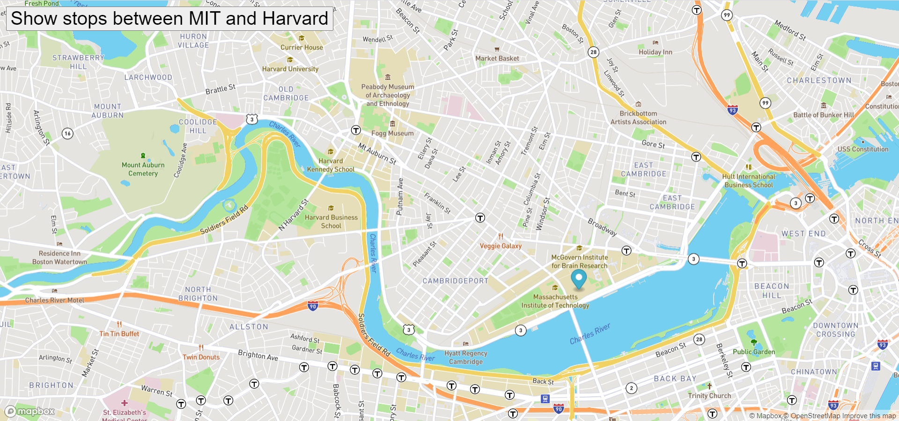
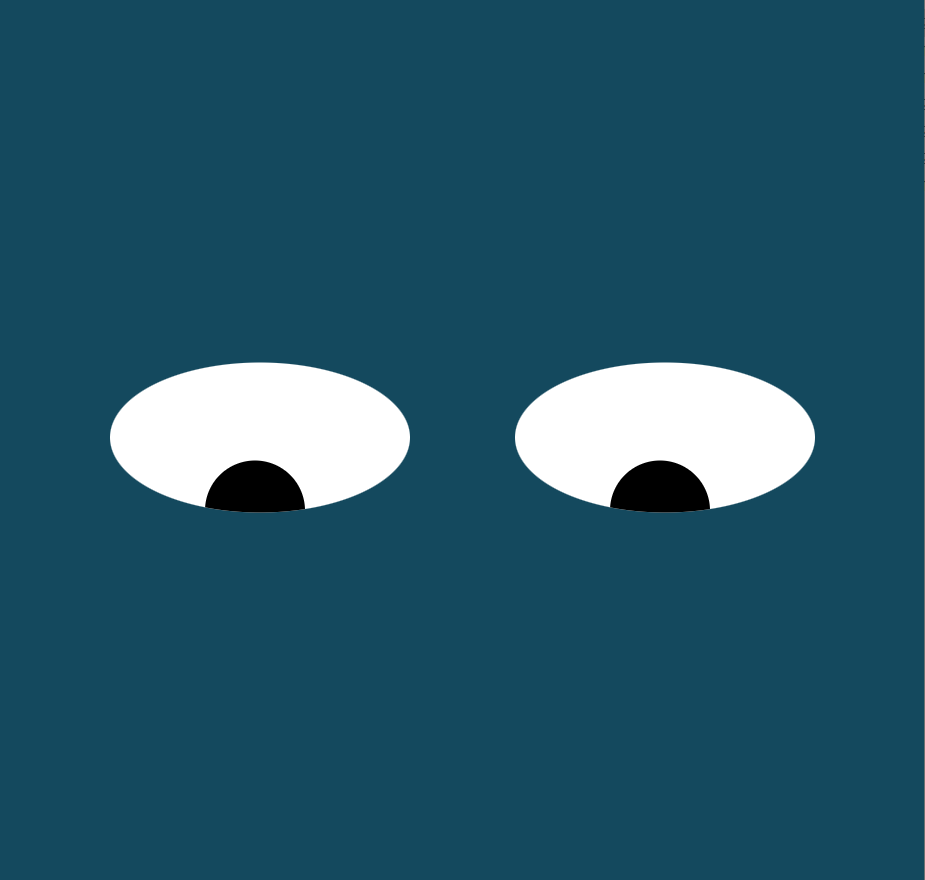

Pacmen Factory
The Pacmen Factory creates multiple pacman elements and control their speed through the screen.

Real Time Bus Tracker
The Real Time Bus Tracker shows the bus stops between the MIT cmapus and the Harvard campus.

Eyes Movement
the eyes web page uses HTML, JS and CSS to create the interaction between the user and the screen.
Github Repo » Real Time »